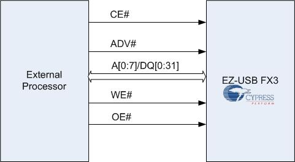
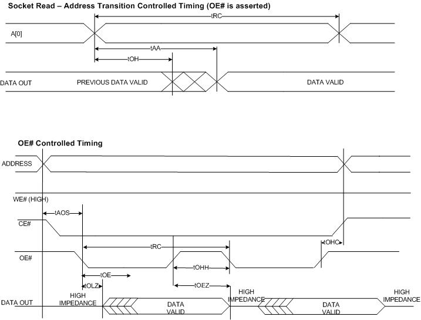
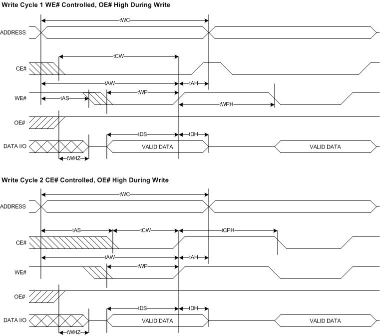
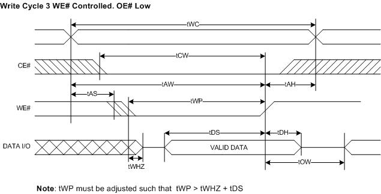

Introduction
One of the key features of EZ-USB® FX3™ is the flexibility and programmability of the General Programmable Interface (GPIF™II). GPIF™II is a programmable state machine that enables a flexible interface to adapt to any processor interface required by the user. GPIF™II state machine is defined by a set of programmable registers. These registers are to be configured by the firmware application running on FX3. The register configuration that programs GPIF™II for a specific interface can be generated by the software tool GPIF™II Designer. This document provides details on how to generate and use Asynchronous SRAM interface on GPIF™II using the tool.
Asynchronous SRAM Interface
Feature Highlights

Figure 1. Asynchronous SRAM Interface Diagram
Configuring EZ-USB® FX3™ processor port to Asynchronous SRAM provides easy access to the configuration registers and buffers from an external asynchronous SRAM controller.
Programming GPIF™II as Asynchronous SRAM
The set of register values that programs the GPIF™II interface as an Asynchronous SRAM can be generated using GPIF™II Designer. GPIF™II Designer generates a "C" header file containing data structures supported the FX3 firmware framework API. The software tool GPIF™II Designer and the firmware framework library are part of the EZ-USB® FX3™ Software Development Kit. A step by step procedure to use GPIF™II Designer to configure FX3 as Asynchronous SRAM is as follows
Configurable Parameters
Following parameters of the interface can be modified to suite the target environment.
To make changes, open the async_sram using GPIF™II Designer as mentioned in step 1.
The configurable parameters and available options are provided on the left side of the Customization Tab.
FX3 peripherals used: SPI, UART,I2C,I2S can be selected.
Data bus width: Data bus width of GPIF II can be 16 bit or 32 bit. 32 Bit data bus width is not supported if SPI is selected.
Pin mapping: Mapping of the interface signal CE# to the FX3 pin connection can be modified.
Note: To swap pins currently allocated pin must be freed. A pin can be freed by allocating
to any other available pin temporarily.
Interface Description & Timing
The Read and Write accesses can be single cycle access or burst access. Figure 2 shows the timing and sequence for Asynchronous SRAM read accesses. Figure 3 shows the timing and sequence for Asynchronous SRAM write accesses.
Read
Read operations is initiated by bringing CE# and OE# LOW while keeping WE# HIGH. Valid data will be driven out of the Data bus after the specified access time has elapsed. Data can be read by toggling the least significant bit, A[0] or toggling of OE#.

Figure 2 Timing Diagram - Asynchronous SRAM READ
Write
For Write operations, both CE# and WE# are asserted. OE# is "Don't Care" during a Write operation Input Data is latched on the rising edge of WE# or CE#, whichever occurs first.


Figure 3 Timing Diagram - Asynchronous SRAM Write
Summary
The data presented here is indicative only and must not be seen as a substitute for the full specification from which it is drawn. Please visit Cypress EZ-USB® FX3™ website for detailed and latest Datasheet.
Notice of Disclaimer
© Cypress Semiconductor Corporation, 2012. The information contained herein is subject to change without notice. Cypress Semiconductor Corporation assumes no responsibility for the use of any circuitry other than circuitry embodied in a Cypress Semiconductor product. Nor does it convey or imply any license under patent or other rights. Cypress Semiconductor does not authorize its products for use as critical components in life-support systems where a malfunction or failure may reasonably be expected to result in significant injury to the user. The inclusion of Cypress Semiconductor products in life-support systems application implies that the manufacturer assumes all risk of such use and in doing so indemnifies Cypress Semiconductor against all charges.